使用jdbc向数据库中插入数据
回忆
- 我们玩了玩数据表的约束条件
- 可以添加约束条件
- ALTER TABLE
table_nameALTER COLUMNcolumn_nameSET NOT NULL;
- ALTER TABLE
- 也可以删除约束条件
- ALTER TABLE
table_nameALTER COLUMNcolumn_nameDROP NOT NULL;
- ALTER TABLE
- 可以添加约束条件
- 但是数据库结构同时也收到数据影响
- 所以一定要一开始的时候想明白
- 保持数据库结构的稳定
- 不过到现在还是没有插入数据啊
- 如何插入数据呢？🤔

复制代码
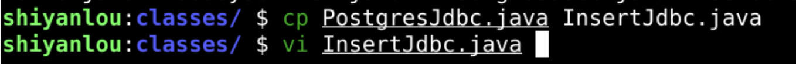
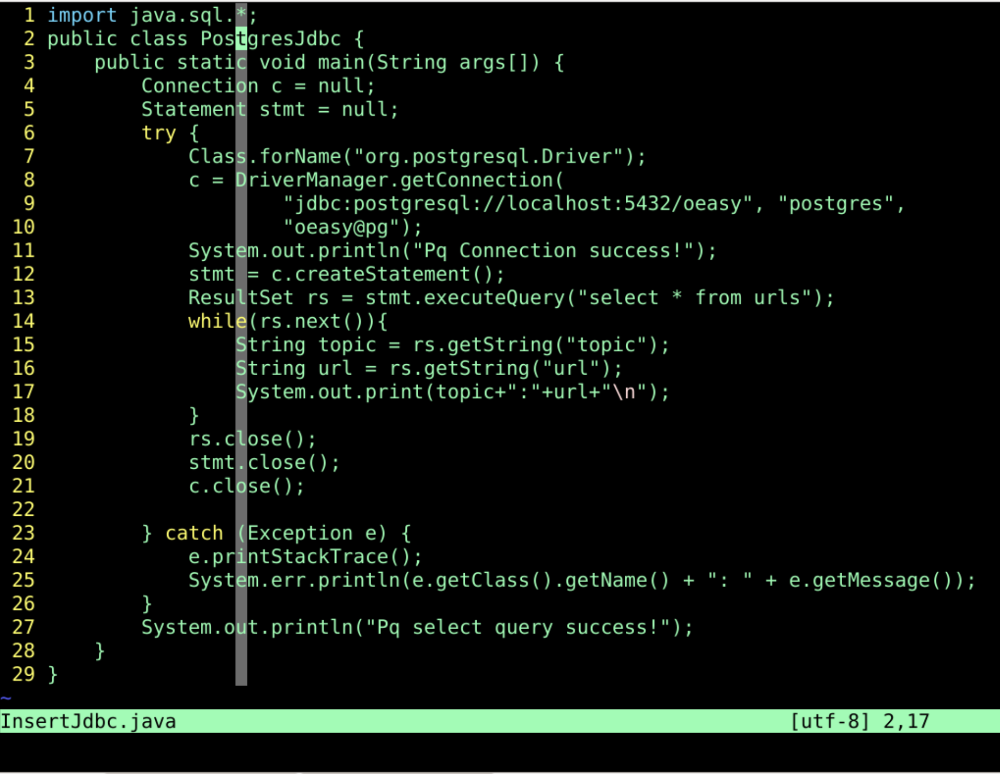
- 在这个基础之上修改
- 究竟应该如何插入数据呢？
- 去哪里找呢？
- 去sun/oracle公司给的jdbc api里面肯定有定义
查询api
- 既然statement可以根据sql找到结果集
- 那么statement大致应该也可以通过sql插入数据
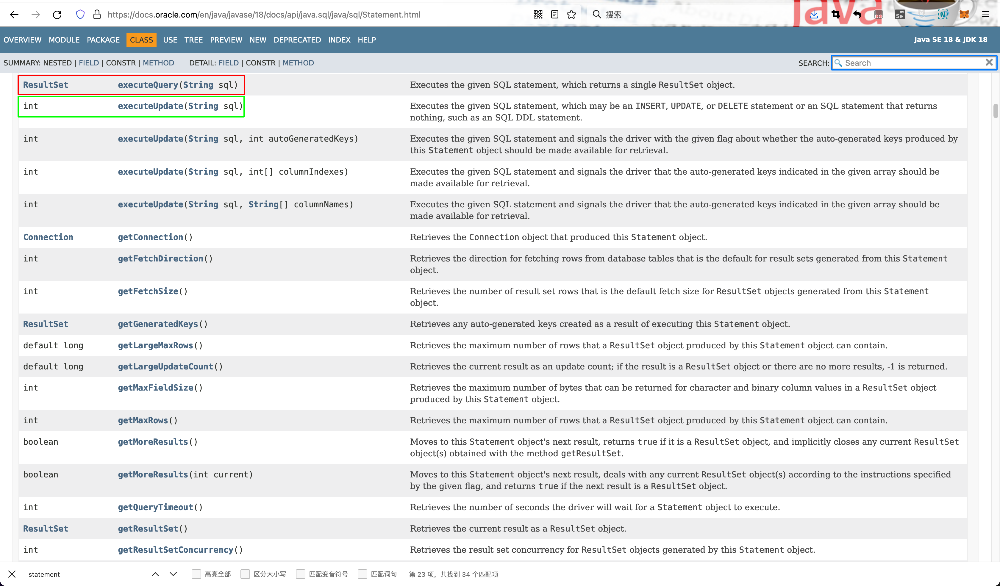
- 好像确实可以
搜索
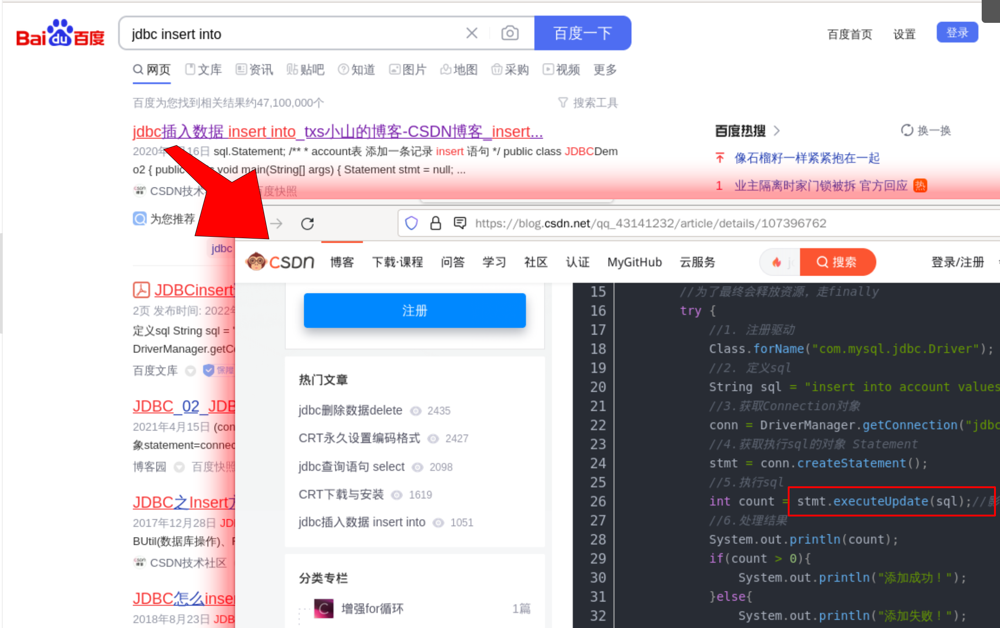
修改
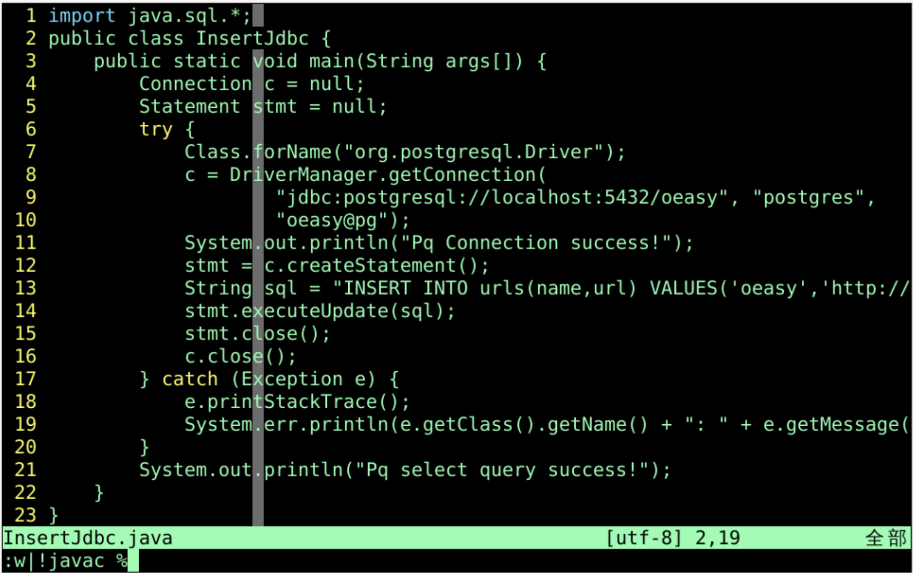
- 注意这里和查询不同的地方
- 查询
- stmt.excuteQuery(sql)
- 更新
- stmt.excuteUpdate(sql)
- 查询
- 保存并编译
- 然后运行
运行结果
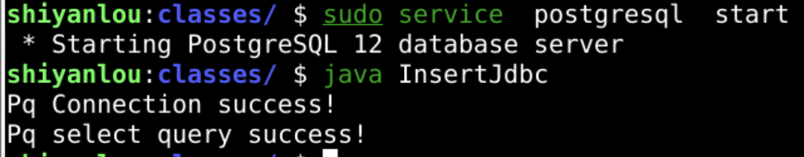
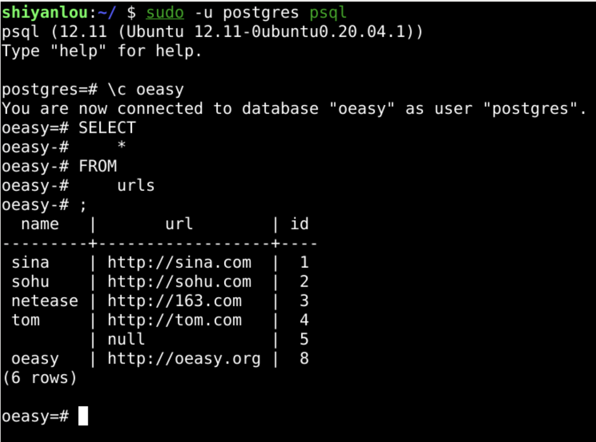
- 确实是可以插入的
- 但是这个程序可以进行一些调试么？
加入调试信息
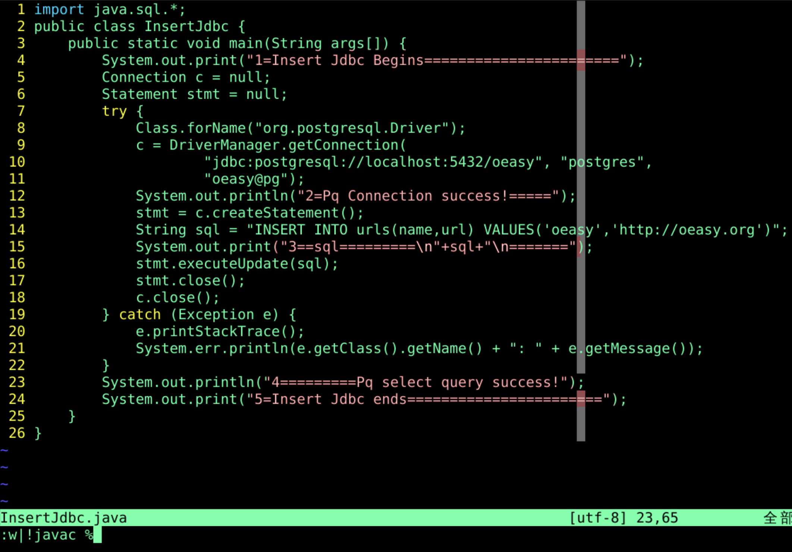
- 确实可以加入调试信息
- 保存并编译
- 可以运行么？
运行结果
- 看到程序运行的过程
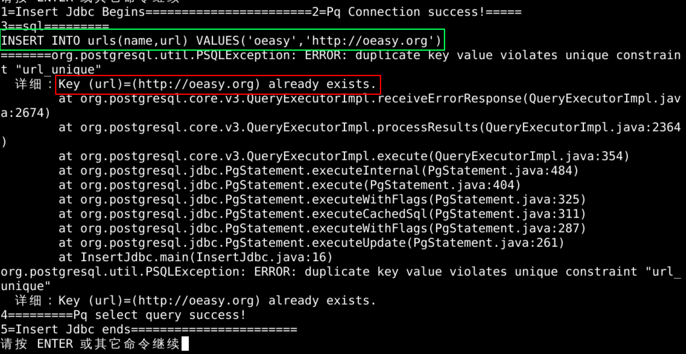
- 由于url中已经有了http://oeasy.org
- 所以无法插入同样的网址了
- 绿色的部分可以直接放到pg里面运行一下么？
直接运行sql
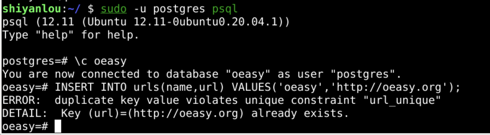
- 可以看到运行的结果是一样的
- 都是报错
改代码
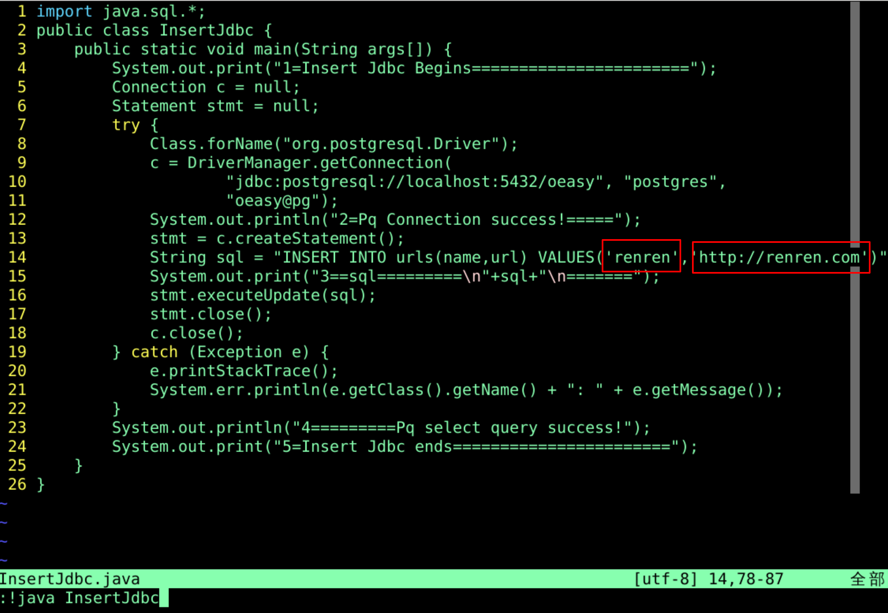
运行
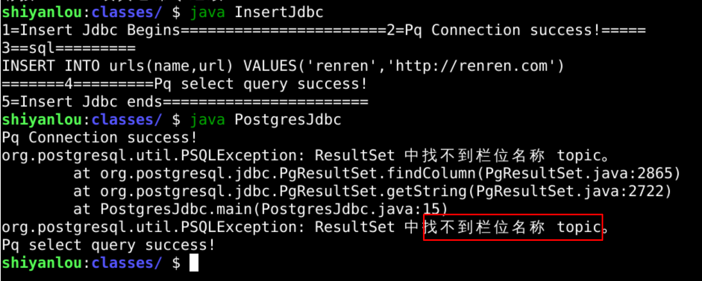
- 再修改PostgresJdbc.java代码
再修改
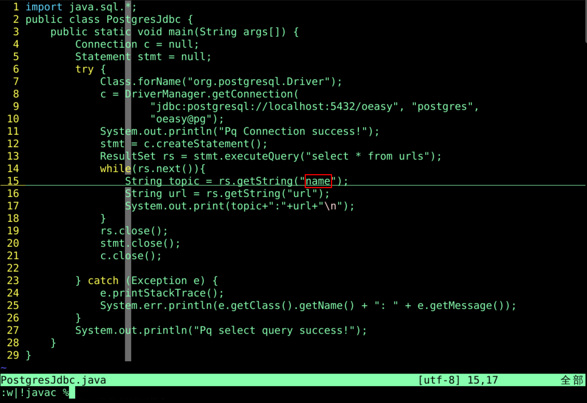
- 编译成功
- 编译时是无法发现那个字段是否修改的
- 之后运行的时候，连接的时候才能发现
结果
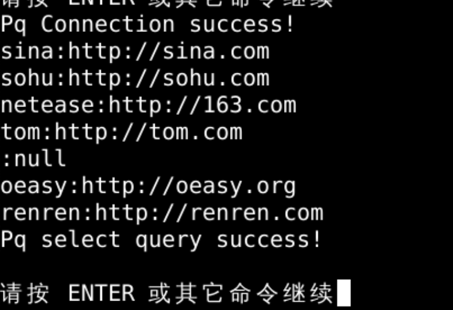
- 运行成功
- 也就是说我们后厨已经能做这道菜了
- 但是能否是通过前台来发请求
- 我们再去做菜呢？
- 先总结一下
总结
- 这次我们完成了
- 通过jdbc连接postgres
- 并且插入数据

- 用java程序插数据这个任务后厨能完成
- 但是怎么和前台配合联动呢？🤔
- 我们下次再说！👋🏻